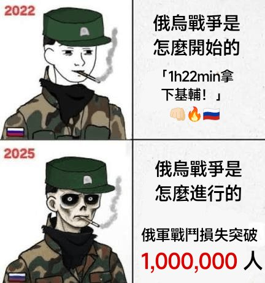
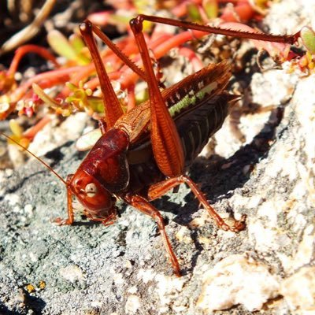

𝐀𝐬𝐡𝐥𝐞𝐲 𝐁𝐥𝐨𝐜𝐤🍥🌹🇹🇼🏳️⚧️🇪🇺
@bolckAshley
Glory to Ukraine🇺🇦🇺🇦🇺🇦


长乐未央
@dsm8NNrmIkKohP9
俄罗斯国家杜马发出警告：经济崩溃恐将引发一场“1917年式”的革命——就在“今年”！
“我们已经向[普京]反复进言十次了：经济注定会崩溃……如果你不立即采取行动……到了秋天，我们将面临1917年那样的局面。”
https://t.co/L2BtR4h63Y